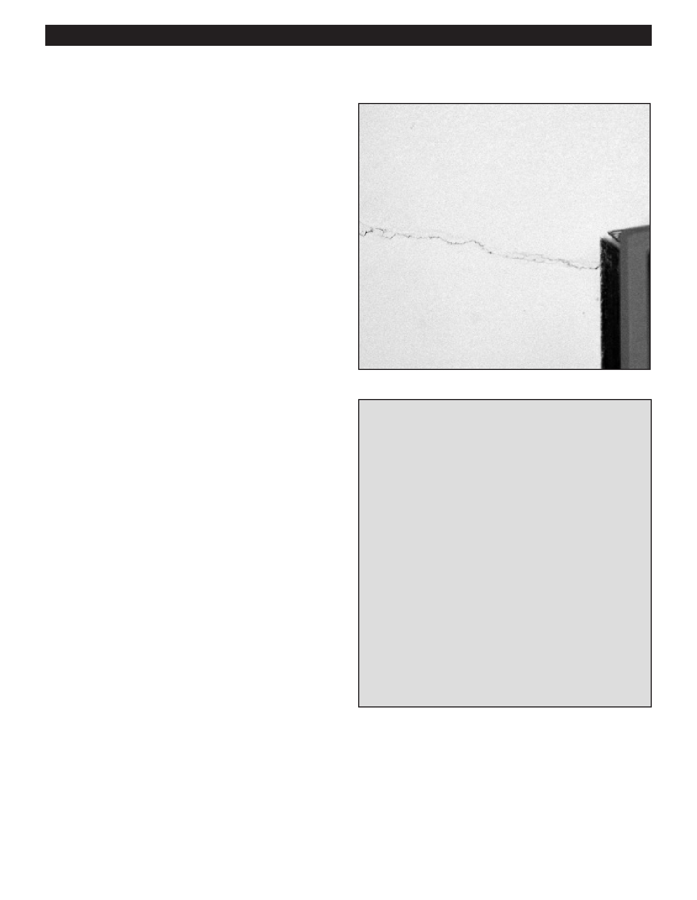

PA RT I C I PA N T R E S O U R C E G U I D E
Ceiling and Walls: Repairing Plaster (continued)
How to Repair a Small Crack
1. Widen the crack to about 1/8 inch using a hammer and
chisel, then remove any loose plaster.
2. Fill the crack with the plaster patch material you’ve
chosen, following the directions on the container.
3. Once the plaster is dry, sand smooth with progressively
finer sandpaper.
4. Prime and paint.
How to Patch a Large Crack
1. Widen the surface of the crack using a hammer
and chisel.
2. Remove debris with a small, soft-bristle brush.
3. Thoroughly wet the crack so it will absorb the
plaster patch.
4. Use a putty knife to spread the plaster patch in the hole.
5. Allow the patch to dry for 24 hours, or as directed by
the patch manufacturer.
Tips for Choosing Plaster Patch Materials
6. Apply a second coat of plaster patch and allow it to dry
You can patch a hole in plaster or drywall with joint
before continuing.
compound, spackling compound, or patching
Tip: Instead of a second coat of plaster patch, apply a
plaster. Each has its advantages and disadvantages.
top coat of joint compound. It’s easier to sand and finish.
Joint compound applies smoothly and sands easily,
7. Sand the surface smooth.
but it shrinks and takes 24 hours to dry. Spackling
8. Prime and paint.
compound dries quickly and doesn’t shrink much,
but it’s harder to sand smooth. Patching plaster
dries in as little as two hours, doesn’t shrink, and is
durable, but it is difficult to sand.
Use product that can handle the size of the hole
or crack. Smaller cracks and holes in plaster can
be patched using a plaster pencil or spackling
compound. Larger areas of damage need a general
patching substance or plaster product.
Consider the ventilation needs for products and the
safety recommendations for them.
19